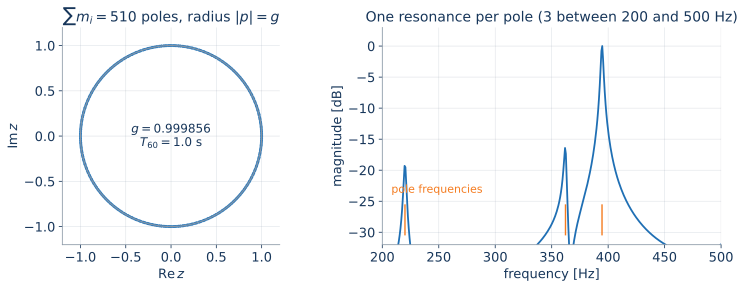
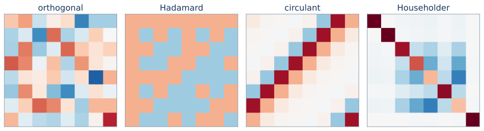
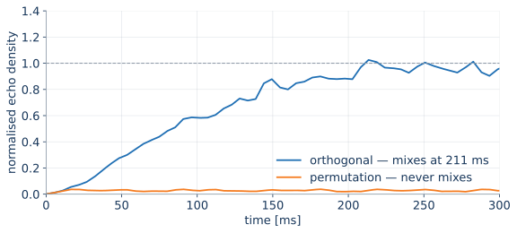
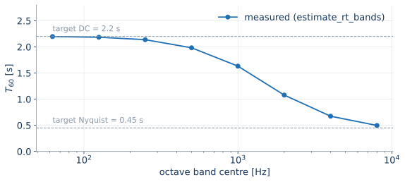
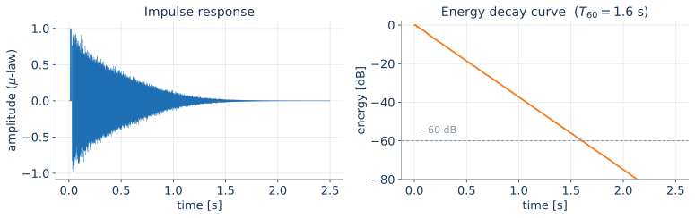
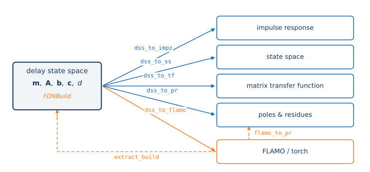
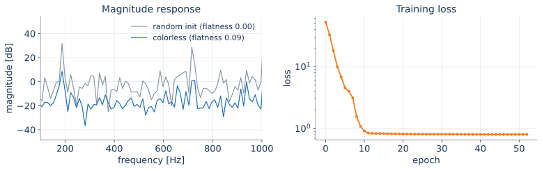
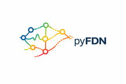

From Theory to Differentiable Design with pyFDN
Friedrich-Alexander-Universität Erlangen-Nürnberg
Massachusetts Institute of Technology
1 September 2026
0:00 — 5 min
| Time | Segment | You will… | |
|---|---|---|---|
| 0:00 | 15 | What is an FDN? | read the block diagram and the transfer function |
| 0:15 | 15 | pyFDN, the tour | know where everything lives, run five lines |
| 0:30 | 25 | Hands-on 1 — build one | design delays, matrix, decay; listen to it |
| 0:55 | 20 | Hands-on 2 — optimise one | train a colorless FDN, match a measured room |
| 1:15 | 10 | Beyond the vanilla FDN | see where the research frontier is |
| 1:25 | 5 | Q&A | ask the awkward questions |
Slides, notebooks and setup instructions: artificial-audio.github.io/pyFDN
Check it works:
If the install fails
pyFDN[examples] pulls torch via flamo — that is the big downloadWhat you need to know already
Convolution with a measured RIR
Recursive (feedback) reverberation
An FDN buys an infinite impulse response for the price of N delay lines and one N × N matrix multiply per sample.
| Year | Who | Idea |
|---|---|---|
| 1961 | Schroeder & Logan | comb + allpass chains; “colorless” as an explicit goal |
| 1976 | Gerzon | unitary networks — losslessness as a matrix property |
| 1982 | Stautner & Puckette | the 4-line feedback matrix; the FDN as we draw it |
| 1991 | Jot & Chaigne | per-line absorption filters → prescribed \(T_{60}(\omega)\) |
| 1997 | Väänänen et al., Rocchesso | efficient structures, modal analysis |
| 2010s– | Schlecht et al. | stability, modal decomposition, allpass & scattering FDNs |
| 2023– | Dal Santo, Schlecht et al. | differentiable FDNs, colorless optimisation |
Sixty years of a structure that is still producing papers — which is exactly why it deserves a toolbox.
0:05
Delay state-space (DSS) — the form pyFDN uses everywhere:
\[ \mathbf{s}(n+1) = \mathbf{A}\,\mathbf{s}(n - \mathbf{m}) + \mathbf{b}\,x(n), \qquad y(n) = \mathbf{c}^{\!\top}\mathbf{s}(n) + d\,x(n) \]
Transfer function, with \(\mathbf{D}(z) = \operatorname{diag}\!\big(z^{-m_1}, \dots, z^{-m_N}\big)\):
\[ H(z) = \mathbf{c}^{\!\top}\big(\mathbf{D}(z)^{-1} - \mathbf{A}\big)^{-1}\mathbf{b} + d \]
Poles are the roots of the generalised characteristic polynomial:
\[ p(z) = \det\!\big(\mathbf{D}(z)^{-1} - \mathbf{A}\big) = 0 \qquad\Rightarrow\qquad \textstyle\sum_i m_i \ \text{poles} \]
Four parameters — \(\mathbf{m}, \mathbf{A}, \mathbf{b}, \mathbf{c}\) (and \(d\)) — and one nonlinear eigenvalue problem hiding in the determinant.



Normalised echo density (Abel & Huang 2006) reaches 1 when the response is statistically Gaussian — that is “mixed”.
Same delays, same decay, same losslessness. Only the matrix changed.
Play both impulse responses. The permutation FDN is the sound of a bad reverb.
Broadband: put the gain in the loop, proportional to the delay length — homogeneous decay, all poles on one circle:
\[ \gamma = 10^{-3 / (f_s\,T_{60})}, \qquad \mathbf{A}_{\text{lossy}} = \operatorname{diag}(\gamma^{m_i})\,\mathbf{A} \]
Frequency-dependent: replace each scalar with a filter \(H_i(z)\) whose magnitude follows \(\gamma(\omega)^{m_i}\) — one filter per line, designed once.

Homogeneity is what makes the decay predictable — and what a graphic-EQ absorption design preserves per band.

Analysis is linear algebra. Design is optimisation. That is the case for a differentiable toolbox.
Functions, not a framework
pyFDN.<thing>Torch only where it earns its place
dss_to_flamoReference-tested
.mat reference fixtures asserting paritytest_marimo_examples_run.py)test_api_reference.py)Notebooks are the documentation
.py file — diffable, testable, importable| Module | What is in it | Typical entry points |
|---|---|---|
generate |
matrices, delays, allpass & scattering constructions | random_orthogonal, fdn_matrix_gallery, sample_delay_lengths |
dsp |
FLAMO-compatible modules | FeedbackDelay, SOSFilterBank, FIRMatrixFilter |
translate |
representation changes | dss_to_flamo, dss_to_impz, dss_to_pr, dss_to_ss, dss_to_tf |
train |
differentiable optimisation | build_fdn, train_fdn, extract_build, Trainable |
graphicEQ |
absorption & equalisation filter design | design_geq, absorption_geq, shelving_filter |
auxiliary |
acoustics, maths, plotting, FLAMO graphs | estimate_rt_bands, echo_density, plot_edc, plot_flamo_graph |
audio |
packaged test signals | load_audio("synth_dry.wav") |
You never import these paths — everything is re-exported at the top level. The table is a mental model, not an import guide.
build = pyFDN.fdn_build_gallery(
8, # eight delay lines
fs=48_000,
rt=2.0, # T60 at DC
rt_nyquist=0.5, # T60 at Nyquist → per-line absorption filters
io_type="ones",
rng=42,
)
build.delays # (N,) delay lengths in samples
build.A # (N, N) feedback matrix
build.B # (N, n_in) input gains
build.C # (n_out, N) output gains
build.D # (n_out, n_in) direct path
build.filters # (n_sos, 6, N) per-line absorption, or None if lossless
build.post_eq # (n_sos, 6, n_out) output equalisation, or NoneFDNBuild is the common currency: every constructor returns one, every translator accepts one, and extract_build(model) gets one back out of a trained model.

Every arrow is tested against its neighbours: the impulse response from the modal reconstruction matches the one from direct simulation, and so on.
Run this in marimo. Then plot it and listen: pyFDN.plot_impulse_response(...), pyFDN.plot_edc(...), mo.audio(wet, fs).
process_fdn does the same in pure NumPy when there are no filters and no gradients involved.
Show both plots for the model just built. The graph makes the Recursion wrapper visible; the parameter plot is the one to keep open all afternoon.
Decide whether to screenshot these two plots into the deck as a fallback, or trust the live notebook. Recommendation: screenshot plot_FDN_build, since it is the plot people will want to photograph.
Getting started
example_process_fdn — pure NumPy simulationexample_vanilla_FDN — the FLAMO pathAbsorption & filters
example_absorption_geqexample_rir_to_fdnexample_multislope_rir_to_fdnTranslation
example_dss_to_ss, _tf, _pr_direct, _pr_flamoDesign & analysis
example_colorless_FDN, example_train_colorless_FDNexample_pole_boundaries, example_spread_fdn_polesexample_delay_matrix_density, example_tradeoffexample_random_fdn_statisticsSpecial FDNs
example_paraunitary_fdn, example_scattering_fdnexample_sdn, example_coupled_roomsexample_allpass_FDN_*, example_time_varying_fdnDeployment
example_fdn_to_faust — design → FAUST → pluginOpen the examples gallery — every one of these is rendered with its outputs and audio.
0:30 — 25 min
Start from examples/example_vanilla_FDN.py, then take it apart:
Open example_vanilla_FDN.py in marimo now. Run all cells. You should hear a 2-second reverb tail.
delays = pyFDN.sample_delay_lengths(
N=8,
delay_range=(1200, 4800), # samples ≈ 25–100 ms at 48 kHz
distribution="geometric", # or "uniform"
coprime=True, # avoid coincident modes
rng=1,
)
# or set them by hand, in milliseconds:
delays = pyFDN.ms_to_smp(np.array([20, 27, 31, 37, 43, 53, 61, 71]), fs)Try three delay sets and listen to each:
(300, 600) — flutter, obvious pitch(2000, 9000) — sparse early reflections, granular onsetcoprime=False and listen for the ringingThen look at pyFDN.echo_density(ir, fs=fs) for each.
Swap in "permutation", "Householder", "Hadamard" and "orthogonal". For each: listen, then measure the mixing time with pyFDN.echo_density. Which one mixes fastest? Which is cheapest to compute?
is_orthogonal, is_unilossless, is_paraunitary — losslessness is checkable, not a matter of faith.
# broadband: bake a homogeneous gain into the loop
g = pyFDN.rt_to_gain_per_sample(rt=1.6, fs=fs)
A_lossy = np.diag(g ** delays) @ A
# frequency-dependent: one graphic-EQ absorption filter per line
target_rt = np.array([2.4, 2.3, 2.1, 1.8, 1.4, 1.0, 0.7, 0.5]) # per octave band
sos = pyFDN.absorption_geq(target_rt, delays, fs)
model = pyFDN.dss_to_flamo(A, B, C, D, delays, fs, sos_filter=sos)Then check that you got what you asked for:
Ask for something extreme — 4 s at 63 Hz and 0.2 s at 8 kHz — and see where the design stops delivering. Why does it break?
Checkpoint. Get an FDN you like the sound of. Then break it: make it metallic on purpose, and say which knob did it.
0:55 — 20 min
What we can do analytically
These are invertible designs: state the target, get the parameters.
What we cannot
No closed form. But every one of them is a differentiable loss.
The FDN is a recursive filter with \(N^2 + 2N + 1\) scalars. Write the objective, and let autograd find them.
FLAMO — Differentiable Audio Processing (Dal Santo et al., DAFx 2025)
torch.nn.Modules: Delay, Gain, Filter, SVF, …Series, Parallel, Recursion, ShellRecursion becomes a matrix inverse over FFT bins, so there is no per-sample unrolling and no vanishing-gradient problem over a 2-second tailpyFDN’s job is to hand FLAMO a correct FDN — admissible matrices, homogeneous decay, sane initialisation — and to read the result back out.
model = pyFDN.build_fdn( # a correct FDN, ready to train
delays=pyFDN.sample_delay_lengths(8, (800, 3200), coprime=True, rng=1),
rt=None, # lossless while training
nfft=2**12,
output="magnitude",
trainable=pyFDN.Trainable( # delays are always fixed
feedback=True, input_gain=True, output_gain=True, direct=False,
),
rng=1,
)
log = pyFDN.train_fdn(model, "colorless", optimizer="lbfgs", max_steps=2000, lr=1e-2)
build = pyFDN.extract_build(model) # back to plain NumPy
build = pyFDN.build_set_decay(build, rt=1.8) # add the decay back inObjectives available today: "colorless", "match_spectrogram", "match_mel_spectrogram" — or pass your own criteria.

Run example_train_colorless_FDN — it converges in seconds on a laptop CPU. Then add decay and A/B against the untrained FDN.
Two different jobs, two different tools:
Design (no gradients needed)
Decay and spectral balance are prescribable. Do them analytically.
example_rir_to_fdn — measured RIR in, FDN out, spectrograms side by side.
nfft is a resolution knob, not a performance knob — too small and you optimise for bins between the modes.Break the training on purpose: max_steps=20, or lr=1.0, or nfft=2**8. Look at log.train_loss and say what failed.
1:15 — 10 min
| Direction | Idea | Notebook |
|---|---|---|
| Allpass FDNs | uniallpass conditions; nested/series/Poletti structures | example_allpass_FDN_* |
| Paraunitary | filter feedback matrices; delay & velvet-noise matrices | example_paraunitary_fdn |
| Scattering | scattering matrices in the loop, more mixing per multiply | example_scattering_fdn |
| SDN | scattering delay networks — geometry-driven | example_sdn |
| Coupled rooms | multi-slope decay, non-exponential EDCs | example_coupled_rooms, example_multislope_rir_to_fdn |
| Time-varying | modulated matrices, stability under modulation | example_time_varying_fdn |
| Modal analysis | poles, residues, modal excitation, pole spreading | example_dss_to_pr_*, example_spread_fdn_poles |
| Decorrelation | multi-output FDNs for spatial rendering | example_decorrelation |
| Real time | compile a design to FAUST, JUCE, a VST3 | example_fdn_to_faust |
A single room decays with one exponential slope per band. Two coupled spaces do not — energy leaks from the small room into the large one, the EDC bends, and a single fitted \(T_{60}\) describes neither room.
Design the FDN as two coupled sub-networks, one per slope.
Figure slot: the bent EDC from example_multislope_rir_to_fdn, with the single-slope fit overlaid to show it missing both slopes. Export it from the notebook into figures/out/multislope.svg before the conference.
Everything so far is offline: Python, torch, FFT-domain recursion. None of it runs in a DAW. adac closes that gap — it walks the FLAMO graph and emits FAUST.
From there: the FAUST web IDE, faust -o cpp, faust2juce, or adac.export_juce for a VST3. pip install adac — NumPy only.
Franchino & Schlecht, Compiling Differentiable Audio Graphs to Real-Time DSP (arXiv:2606.21277) — notebook: example_fdn_to_faust
Before emitting anything, certify bounds the loop gain around the feedback path — at the parameter values as they will be written into the source, single precision, ten significant figures.
Below one at every frequency is sufficient for BIBO stability. So a certified-stable verdict rules out the plugin that blows up after a code generator’s rounding.
export_juce refuses to build an uncertified model unless strict=False.
Then check it end to end. Render the compiled FAUST with dawdreamer and overlay it on the FLAMO reference:
Peak difference: −96 dB left, −92 dB right, relative to each channel peak — single-precision noise plus FLAMO’s FFT time-aliasing floor.
The translation is checked, not assumed.
One click, no toolchain: the notebook builds a faustide.grame.fr link carrying the whole DSP as a base64 payload. It compiles to WebAssembly in the browser with live rt60 and dry/wet knobs.
Next
adac back-ends beyond FAUSTContributing
.py notebook in examples/ — CI runs it and the gallery picks it up automatically.mat fixtures welcome: parity with your MATLAB code is a testMIT licensed. If you publish with it, cite the DAFx 2026 paper and tell us — we would like to know what it is being used for.
Slides · notebooks · API reference: artificial-audio.github.io/pyFDN
Foundations
Analysis
Design & optimisation
This toolbox
docs/references.bib in the repository — every notebook cites its source
DAFx 2026 · Cambridge, MA · pyFDN tutorial · artificial-audio.github.io/pyFDN